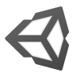

Английский
Уровень B2–C1: уверенно читаю техническую документацию, понимаю сложные тексты и могу общаться на профессиональные темы. Продолжаю совершенствовать навыки для достижения уровня C1.
Я начинающий разрабочик, увлечённый программированиеи и созданием собственных проектов. Быстро обучаюсь, с интересом осваиваю новые технологии и стараюсь применять полученные знания на практике.
Мне нравится решать технические задачи, экспериментироать с идеями и находить способы сделать свои проекты лучше. В свободное время я увлекаюсь видеоиграми, чтением, комиксами и настольными ролевыми играми. Также мне интересно разрабатывать собственные игровые концепции и исследовать, как устроены виртуальные миры и их механики.
Я стремлюсь постоянно развиваться, совершенствовать свои навыки и создавать полезные, интересные и качественные проекты.
Уровень B2–C1: уверенно читаю техническую документацию, понимаю сложные тексты и могу общаться на профессиональные темы. Продолжаю совершенствовать навыки для достижения уровня C1.

Уверенно работаю с Unity, разрабатываю игровые механики и использую основные инструменты движка для создания игровых проектов.
Изучаю движок Godot, осваиваю его инструменты, систему сцен и скриптовый язык GDScript для разработки игр.

Обладаю средним уровнем владения Python, умею писать скрипты, работать с базовыми структурами данных и автоматизировать задачи.
Обладаю средним уровнем владения HTML5, умею создавать структуру веб-страниц, использовать семантическую разметку и основные HTML-элементы.
Умею эффективно использовать ИИ для решения рабочих задач: составления запросов, генерации и анализа кода, поиска решений, автоматизации процессов и ускорения разработки.
Работал оператором поддержки в CDEK. Работал с людьми в чатах и звонках. Работал с претензиями, негативно настроенными клиентами.
Работал оператором поддержки в маркетплейсе Ozon. Работал в чатах. Помогал людям с заказами, претензиями, ошибками в работе приложения и сайта.
Доставлял заказы из кафе и ресторанов на ногах.
Следил за порядком в клубе. Принимал оплату, следил за игровым временем. Помогал с настройкой приставок.
2022-2025
Специальность: разработчик программного обеспечения
Технический специалист
Дополнительная информация: во время учёбы изучал следующие технологии: Python, C#, Unity, Web, Arduino
2D-платформер, в котором тема путешествий во времени становится основой игрового процесса. Игрок исследует уровни, преодолевает препятствия и взаимодействует с окружением, используя особенности разных временных периодов. Проект предполагает сочетание классических механик платформера с головоломками и изменением игрового мира. Основная задача разработки — создать интересные игровые ситуации и связать механику перемещения с временной тематикой. Это pet-проект, в рамках которого я изучаю разработку игр и проектирование игровых механик.
Персональный сайт-портфолио, созданный для презентации моих навыков, интересов и собственных проектов. Сайт объединяет информацию обо мне, технические компетенции, опыт и примеры выполненных работ в едином интерфейсе. Визуальный стиль вдохновлён тёмным фэнтези и сочетает атмосферное оформление с удобной навигацией. При разработке я уделяю внимание адаптивной вёрстке, структурированию кода и доступности контента на разных устройствах. Проект также служит практикой в HTML, CSS и JavaScript.
Небольшое приложение-калькулятор, предназначенное для выполнения повседневных арифметических вычислений. Проект позволяет отработать обработку пользовательского ввода, работу с числами и реализацию математических операций. Особое внимание уделяется корректной обработке выражений, отображению результата и предотвращению ошибок при вычислениях. Интерфейс разрабатывается с учётом удобства использования и понятной обратной связи для пользователя. Это практический проект для закрепления основ программирования и создания интерактивных интерфейсов.
Игровой проект, переосмысляющий классический морской бой в научно-фантастическом сеттинге. Вместо неподвижного размещения кораблей предполагается возможность перемещать их по игровому полю и использовать специальные способности, расходуя ограниченный запас энергии. Повреждения кораблей влияют на их мобильность, а некоторые бонусы позволяют менять позицию или скрывать перемещения от противника. Проект предусматривает режим игры против бота и локальное сражение двух игроков на одном устройстве.
Игровой проект о жизни ведьмы в фэнтезийном мире, где магия и исследование окружающей среды составляют основу игрового опыта. Концепция предполагает возможность изучать магические способности, экспериментировать с заклинаниями и развивать собственные навыки. Важной частью проекта является взаимодействие игровых систем, от управления ресурсами до применения магии в различных ситуациях. Разработка такого симулятора предоставляет возможность экспериментировать с игровой логикой, прогрессией персонажа и созданием атмосферного мира.
Email: levalex200407@gmail.com
Linkedln: https://www.linkedin.com/in/alexander-levin-656373364
Telegram: https://t.me/alexlev541
+7 705 111 94 74